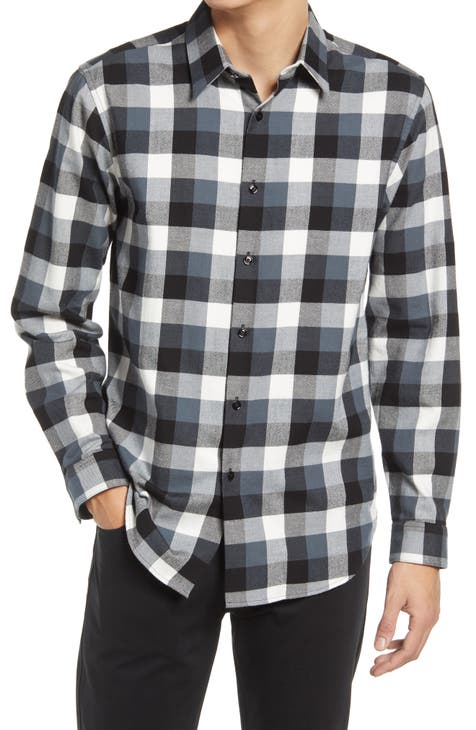
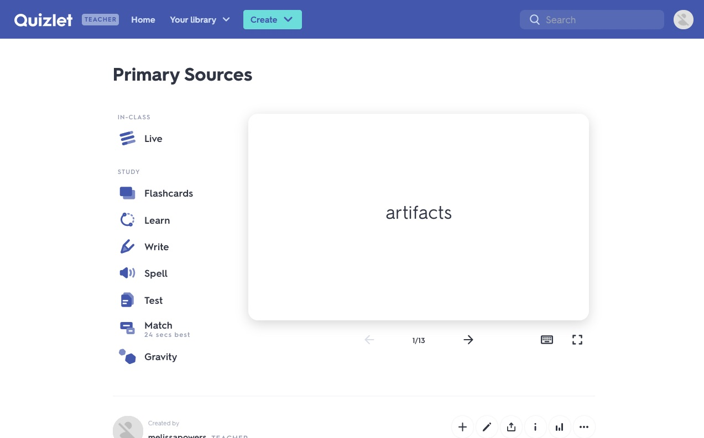
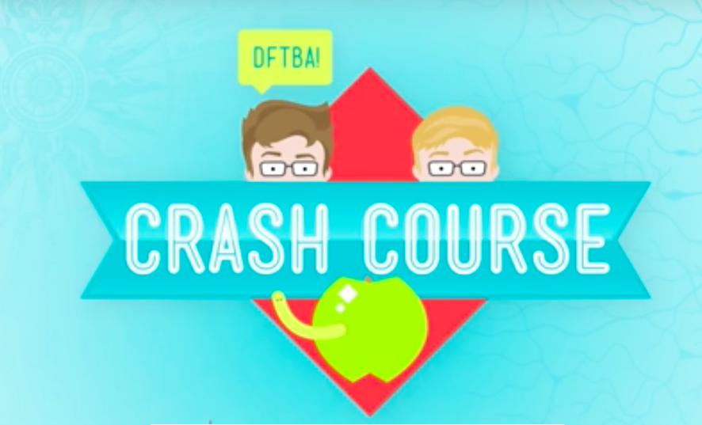

introduction |
| This page suggest topics include study/test skills, paper writing skills, fashion, creator's own list of CEC survival. |
tips |
fashion
Fashion is not really matter in school. However, if you wear nice fashion, it gives people good impression about you and that good impression may connects to good relationship, but even to good marks. It may give positive effects you and around you.
Hoodies on jeans or leggins are casual. Just don't put hoodies on in the building (teachers hate those).

Dress shirts or button shirts are nice daily fashions. It looks neat and stylish if you wear them well. |
Helpful SitesQuizlet

Quizlet provides most of the answers of questions that teacher gives students. It's handy when you work on questions that you don't know.
Lithcharts
Litcharts is mostly for English courses. It provides summaries and analyses of novels or stories.

Internet is a good teacher. You can find almost anything from google. Though, you have to figure out yourself that weather the answers from google is right or wrong.
crash course

Crash Course provides vairous different subject animations that can help students to understand.
|